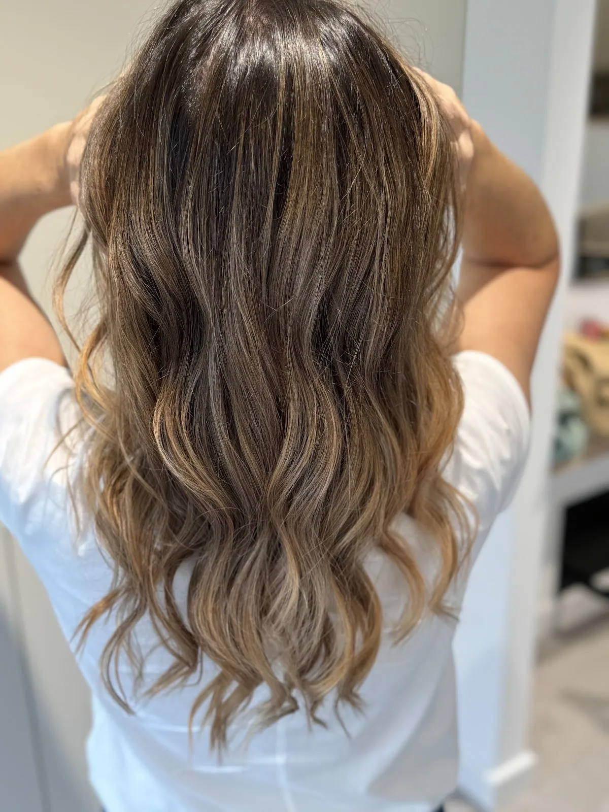
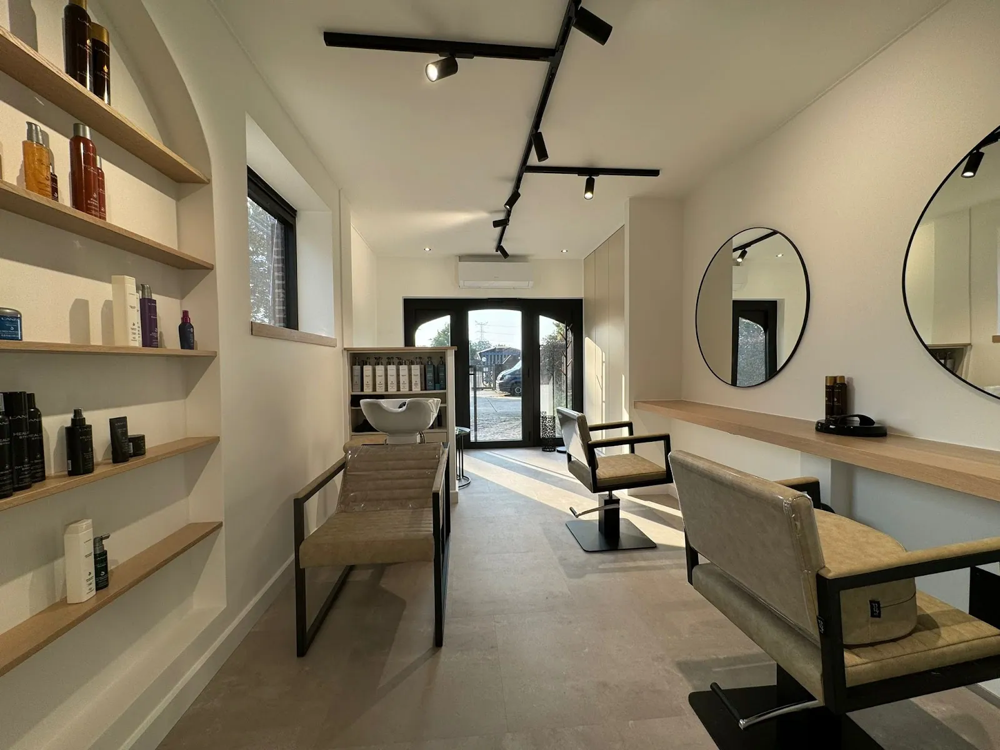
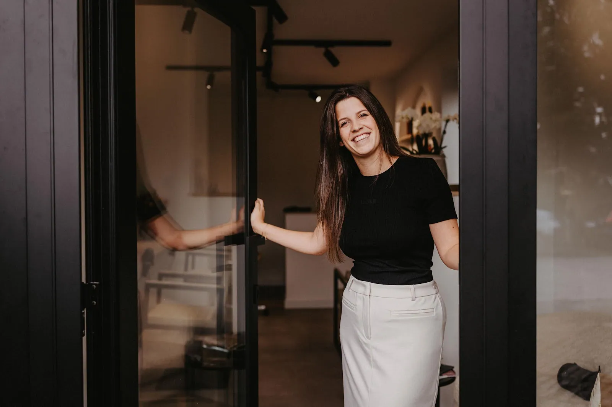
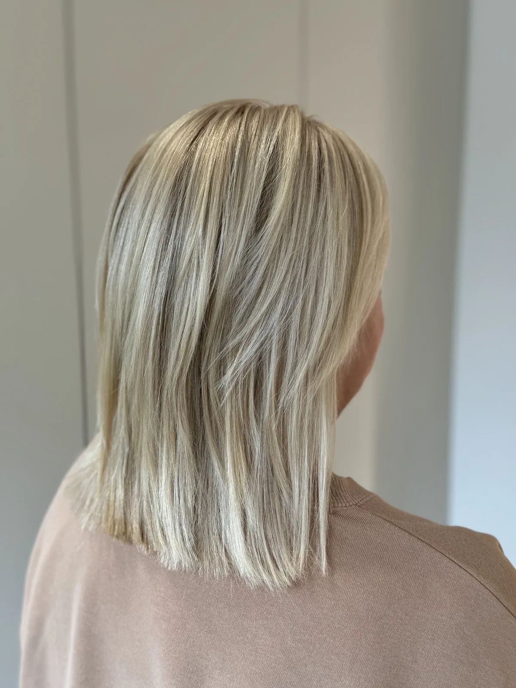
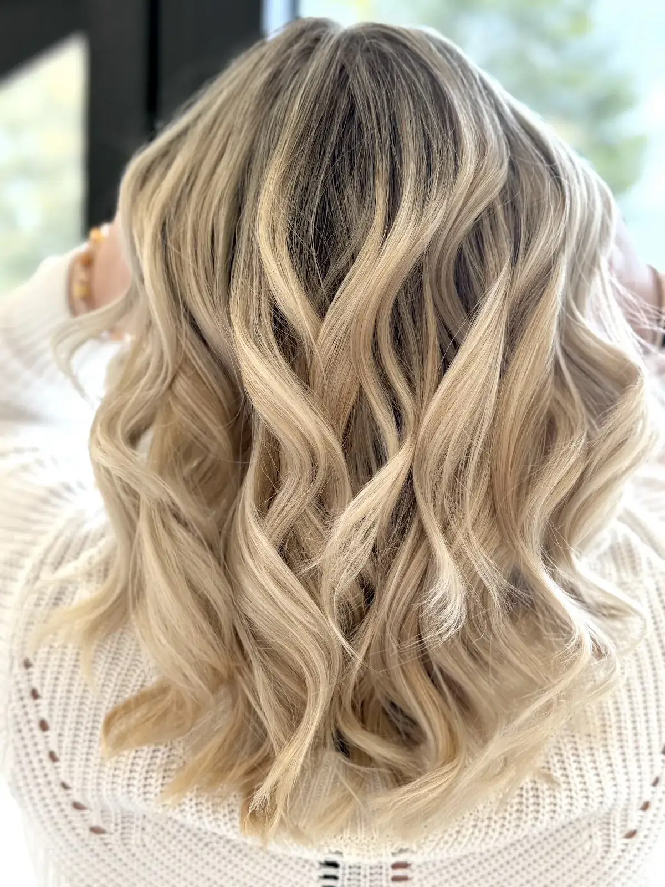
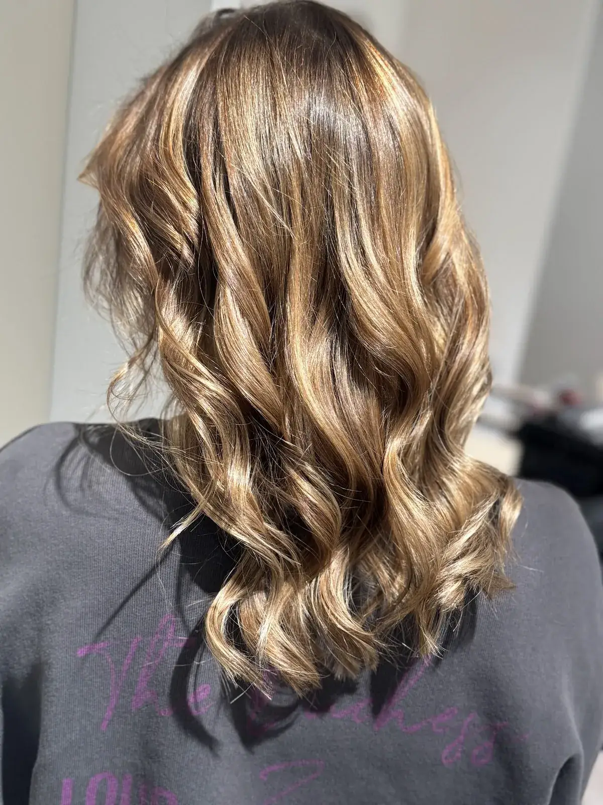
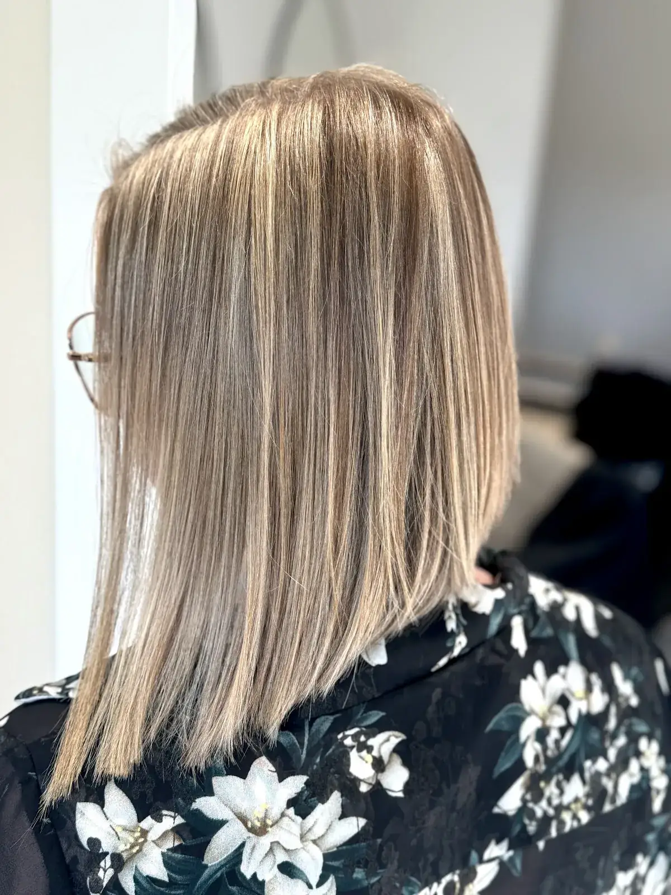
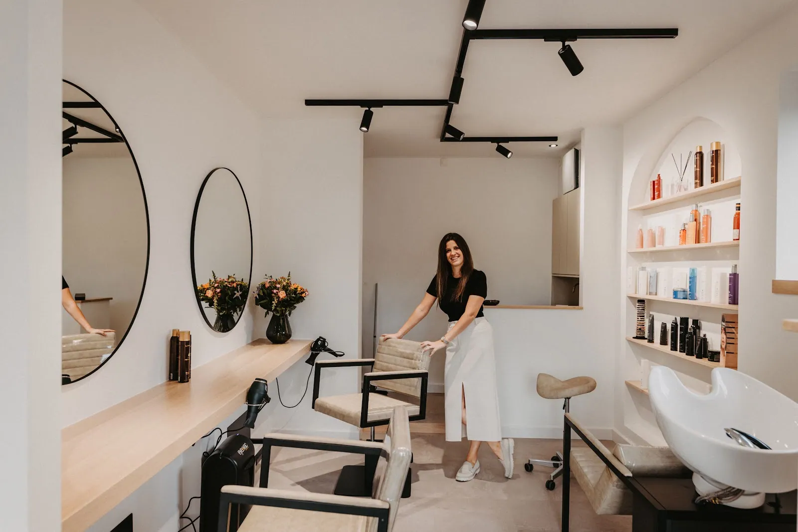
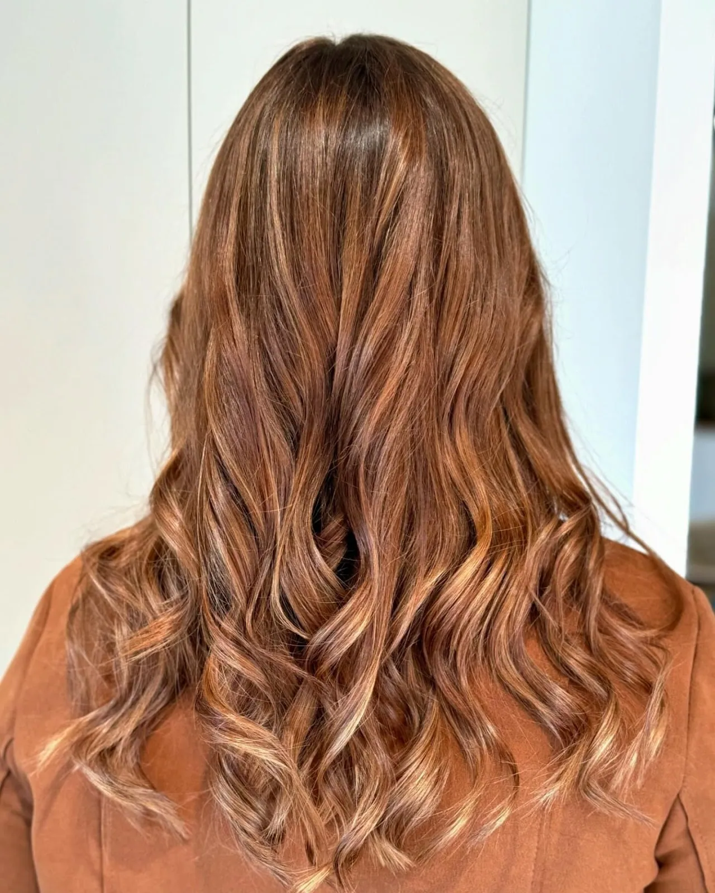
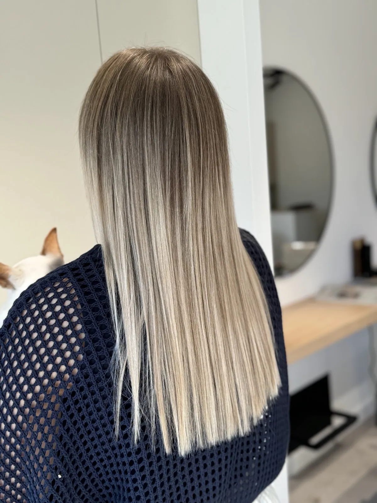

Scheppersstraat 38 · Herentals
Kleur die bij je past. Krullen die je nog niet kende.
Bij Katrien neem je plaats in een rustige, lichte salon. Ze kijkt eerst naar je haar en naar wat je ermee wil, en denkt met je mee over de mogelijkheden. Voor dames en heren, altijd op afspraak.
5,0
★★★★★30 reviews op Google
Op afspraak

☀
Zaterdag vanaf 7uvoor wie vroeg wil
☾
Donderdag tot 21una je werk nog langs
Diensten
Wat je bij Katrien kan laten doen.
Je bent hier geen nummertje. Katrien neemt de tijd om te luisteren, ook als je zelf nog niet goed weet wat je wil.





Kleurkaart
Welke tint trekt je aan?
Kies een kleurfamilie en zie hoe die er bij Katrien uitziet. Twijfel je? Ze kijkt samen met jou wat bij je past.
GoudblondWarm, zonnig blond met zachte golven. Mooi bij een lichte huid met warme ondertoon.
Alle foto's zijn werk van Katrien, gemaakt in de salon.
“Nooit geweten dat mijn haar dit kon!”
Jessy Bervoets, na haar krullenbehandeling
In de kijker
De krullenbehandeling.
Heb je steil of futloos haar en droom je al jaren van krul? Met een krullenbehandeling krijgt je haar blijvende golf of krul. Katrien bekijkt eerst samen met jou wat je haar aankan en welk resultaat je mag verwachten.
- Eerst een gesprekWelke krul wil je, en wat is haalbaar voor jouw haar?
- De behandelingRustig, in de salon, zonder haast.
- Tips voor thuisHoe je je krullen elke dag mooi houdt.
Werk
Recht uit de salon.
Geen filters, geen studio. Gewoon het resultaat zoals klanten de deur uitstappen.


Katrien
Een salon waar je welkom bent.
Maison Katrien is een lichte, rustige salon in hartje Herentals. Wie binnenkomt, merkt het meteen: Katrien neemt de tijd, luistert echt en denkt mee. Er is altijd ruimte voor een gezellige babbel.
Ze kent haar vak en weet wat ze doet, of het nu gaat om een frisse snit voor een man die snel weer weg wil, of om die ene kleur waar je al lang naar zocht.
Reviews
Wat klanten zeggen.
5,0★★★★★
Een perfecte score uit 30 reviews op Google.
Lees ze allemaal →“Je bent geen ‘nummertje’, want ze neemt echt de tijd om te luisteren en mee na te denken over de mogelijkheden.”
“Nu al een jaar klant en nog altijd heel tevreden! Ze kent haar vak, weet wat ze doet en je kan altijd rekenen op een gezellige babbel.”
“Voor een krullenbehandeling gegaan en met een totaal nieuwe bos krullen weer naar buiten gelopen 😄”
“Professionele kapster met uitstekend advies voor kleuring. Super content met men nieuwe kleur en kapsel 🤩”
“Ik kom heel graag bij Katrien. Je voelt je er meteen welkom en Katrien is vriendelijk, betrokken en professioneel.”